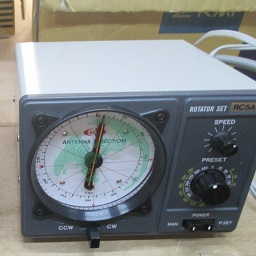
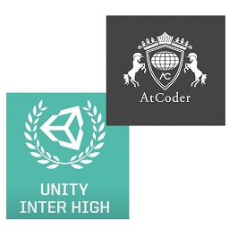

通常活動 月曜日から土曜日までの放課後に、中学棟3階の物理第三実験室で活動しています。 部員は、3班のうち最低1つに所属しています。詳しい活動内容は、各班のページをご覧ください。 プログラミング班 ツールやゲームの製作、アルゴリズムや言語に関する研究をしています。 電子工作・マイコン班 電子工作や、PICマイコンを用いたロボット製作をしています。 ピタゴラ班 ピタゴラ装置の製作や、3Dプリンターで印刷するモデルの設計をしています。 実験部門 物理実験を考案し、実行しています。 装飾部門 文化祭で使う看板の制作や、物理部Tシャツのデザインをしています。
イベント 毎年1回ずつある3イベントの他に、不定期のエッグドロップ大会などがあります。 部員の一部は、外部のコンテストにも参加しています。 文化祭 駒東で最大のイベントです。 物理部でも、夏休み以降は文化祭に向けて準備します。 合宿 例年、夏休みに合宿を行い、物理に関連する研究施設などを見学させていただいています。 無線大会  毎年4月末に行われる、アマチュア無線のオールJAコンテストに参加しています。 エッグドロップ大会 不定期ですが、例年2-3回開催しています。また、エッグドロップ甲子園にも参加しています。 その他コンテストなど  プログラミング関連を中心に、部員が個人で参加しています。